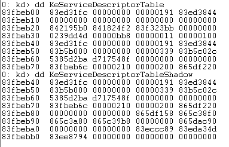

ShadowSSDT_HOOK
影子系统描述符表 win32k.sys
原理同 SSDT HOOK
不过 SSDT 函数地址记录在KeServiceDescriptorTable中
ShadowSSDT 函数地址记录在 KeServiceDescriptorTableShadow中
注意
KeServiceDescriptorTableShadow 并未导出 故不能 extern 获得其地址
可通过其 相对KeServiceDescriptorTable的偏移获取地址 不同os版本偏移可能不同
也可通过代码查找定位 其前 0x10 个字节 与KeServiceDescriptorTable前10个字节相同
KeServiceDescriptorTableShadow 的函数在win32k.sys中
KeServiceDescriptorTableShadow 中的函数似乎只能在程序中调用
ShadowSSDT_HOOK结构

83fbeb40为KeServiceDescriptorTable表开始
+0x10 既83fbeb50 是函数地址表(数组首地址 既83b5b000)
+0x18 既83fbeb58 是函数数量(既数组长度0x339)
x win32k!*
bp win32k!NtUserPostMessage
bp win32k!NtUserShowWindow
bp win32k!NtUserFindWindow
bp win32k!NtUserDestroyWindow
bp win32k!NtUserPostMessage
dd poi 83b5b000